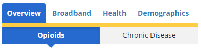
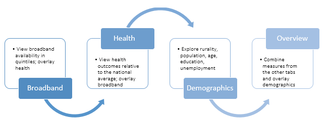
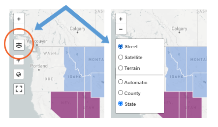
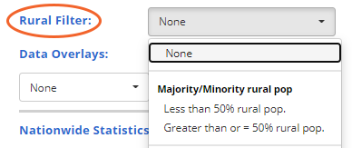
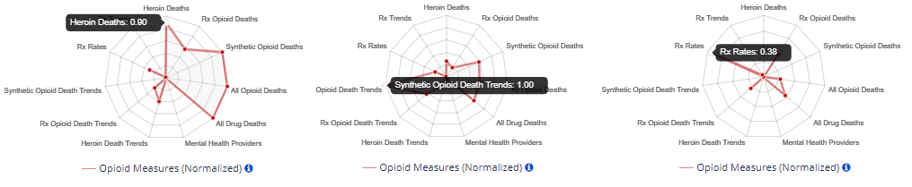

Getting Started
The 2022 release of the Mapping Broadband Health in America platform immediately puts you in the driver’s seat. This page will help you get started. It outlines three simple steps you can follow to begin exploring the platform’s features.
STEP 1: Understand the Map Organization
 The mapping tool has two main tabs – Opioids and Chronic Disease. Each of those tabs is subdivided into four sections: Overview, Broadband, Health, and Demographics. You can start to engage with the map from any point, but to explore broadband and health data, start with the Broadband or Health tabs. Then, each of these tabs allows you to explore the data in different ways. The Demographics section provides additional context, including rurality, population density, age, unemployment, and education.
STEP 2: Define What Are You Looking For
Choose a general area to intersect with broadband connectivity, either Opioids or Chronic Disease.
Then, determine what information you would like to display. Are you curious about the broadband health statistics in your county or surrounding counties? Do you want to learn more about a specific broadband or health measure across various locations? Or are you looking for connected health gaps or areas of opportunity?

Choose Opioids if ...
... you’re interested in intersecting broadband with drug mortality data and prescribing rate metrics, and comparing county mortality trends over time.
Choose Chronic Disease if ...
... you’re interested in exploring health outcomes like diabetes and obesity as well as access to care and quality of care measures like physician shortages or preventable hospitalizations.
Then, start with the Broadband Tab if ...
... you’re interested in looking at the picture of broadband in a particular area. These maps display varying levels of broadband connectivity in color-coded quintiles -- 0-20%, 20-40%, 40-60%, 60-80%, 80-100% broadband connectivity. You can then apply a health filter, such as obesity, physician access, or opioid mortality. The map will dynamically identify the areas that meet the selected health filter and then visualize broadband connectivity in only those areas.
Start with the Health Tab if ...
...you’re interested in looking at the picture of health through a broadband lens. These maps show various health measures across the nation at the state and county levels. You can also apply a broadband filter (e.g., 30-60% access to broadband). The map dynamically identifies those areas that meet the selected broadband filter and then shows the selected health measure -- from low to high incidence -- in only those areas.
Use the Overview Tab to ...
...put all the pieces together and to visualize the interplay of broadband measures with health. You can use “slider bars” to exercise greater control over what the map displays, setting your own parameters for various broadband, health and demographic measures. Only regions that match the selected parameters are shown. Areas meeting the broadband parameter appear as blue; those meeting the health parameter appear as pink; and those matching both parameters appear as purple.
Default views ...
…The mapping platform general defaults to views showing areas of high health need (above the national average for the selected health measure) and lower connectivity resources (below the national average for the selected connectivity variable).
STEP 3: Apply Advanced Map Features to Generate Custom Maps
In addition to displaying basic broadband and health information, the map contains other features that allow you to customize map information and share it with others. For a more comprehensive listing of map features, view the Quick Start Tutorial. Here are a few examples to get you started.
Toggle State and County Level Information:

Click on the Stack Tool in the upper left hand corner (below the + and – zoom buttons) to change from state view to county view.
When you select county level, the map updates dynamically and applies your selections to a nationwide county level map. Doing this often shows patterns that might not be as clear at a state-level view. Drilling down to the county level also allows you to see greater differences within a state. You can then zoom in to focus on particular counties within a state. Once you click on a state and/or county, the statistics for that location will dynamically generate on the right.
Compare rural and urban areas:

The Overview, Broadband, and Health tabs give you the option to apply a Demographic Filter for rurality (at different percentages like ≥50% or 0-20% rural population) based on U.S. Census data. This allows you to isolate patterns that might affect rural and urban areas differently.
On the Broadband tab, you can dig deeper into the statistics to see what percentage of a population has the greatest number of choices and highest speeds. Such insights could inform how connected health interventions are structured. In the example to the right, the graph shows that there are six providers. 99.2% of the population has access to fewer than two providers; and, download speeds of 100-1000 mbps are available to 58.9% of the population.
See what’s driving the health outcome in a selected geography and how broadband can help:
The spider graphs on the Health Tab can help target broadband health interventions and collaborations. It also guides users to key areas for further investigation in the relevant county. This feature works dynamically, creating a graphical representation of the selected county compared to all counties with data in the U.S. All the variables are normalized (between 0 and 1) to the best and worst county for each measure. In the three sample counties below, for example, heroin deaths (left), synthetic opioid trends (middle), and prescription rates (right) represent areas of health need relative to other counties.

Share What You’ve Found
Each customized map generates a unique, dynamic URL or web link to help you share the map that you’ve created. This feature serves as a good collaboration tool as you formulate strategies and discern insights from the data. Once you’ve created a map that you want to share, copy and paste the link displayed at the top of the mapping tool and email, text or share on social media. With a single click, the recipient will be able to see the map you’ve created.
We encourage you to explore and experience the maps on your own. These are just a few of the customization options and capabilities of the Mapping Broadband Health in America platform.
View our FAQs.